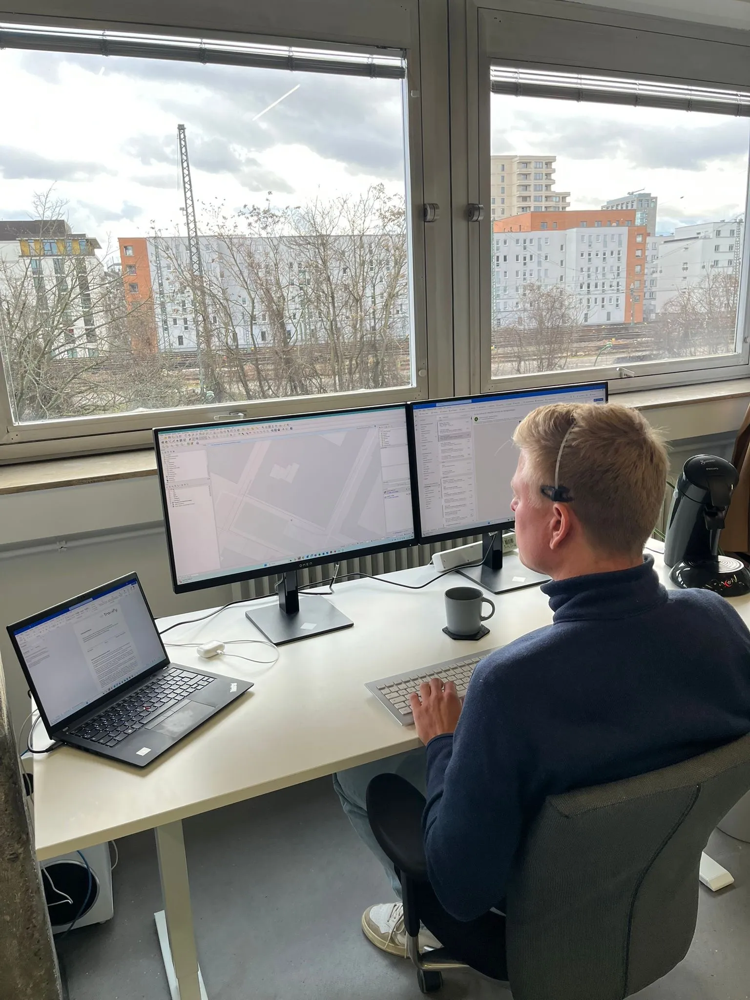

Kontaktieren Sie uns
Wir bemühen uns, Ihnen innerhalb von 24 Stunden bestmöglich zu antworten.
Kontaktdaten
Wenn Sie Fragen haben, Anfragen stellen möchten oder generell mit uns in Kontakt treten wollen, können Sie sich gerne bei uns melden
60385 Frankfurt am Main
Sie haben Fragen?
Warum wurde Trassify gegründet?
Die Digitalisierung nimmt mittlerweile auch in konservativeren Branchen wie dem Bauwesen Fahrt auf.
Die Gründer von Trassify beobachten zunehmende Technologie-Offenheit und Investitionen in allen Phasen eines Bauwerks: In der Planung, in der Bauphase, im Bauwerksbetrieb. Dabei gewinnen die entsprechenden digitalen Werkzeuge in Form von Hard- und Software an Popularität. Zum Engpass werden auf der einen Seite die Fachkräfte und Experten, die die Werkzeuge anwenden, und auf der anderen Seite Daten, mit denen die Systeme gefüttert werden: Planungssoftware wie CADs oder GIS, Ausführungssysteme wie Maschinensteuerungen oder Vermessungsinstrumente, oder IST-Modelle - alle Systeme benötigen Daten als Input.
Trassify sieht sich als Vermittler und Erzeuger von Daten in für seine Kunden optimal nutzbare Formate.
Ist ein Gesamttrassenplan vollständig?
Im Zweifel: Nein.
Natürlich nimmt Trassify jeden Hinweis auf Leitungen auf und arbeitet ihn in die Ergebnisse mit ein.
Allerdings existiert in Deutschland kein rechtsgültiges Leitungskataster. Dazu kann es erfahrungsgemäß immer, überall und selbst den professionellsten Leitungseigentümern vorkommen, dass Einmessungen fehlerhaft, gar nicht stattfinden oder Informationen verloren gehen. Deswegen ist jeder Verdacht und Hinweis auf Vorhandensein von Leitungen ernst zu nehmen: Hinweis- und Warnschilder, Gaspfähle, Marken und Straßenkappen, Schacht- und Schieberdeckel oder Schachteinbauten. Schlussendlich muss der jeweilige Grundstückseigentümer wissen, welche bzw. wessen Leitungen in seinem Grundstück verlegt sind.
Wie lange dauert die Leistungserbringung?
Das hängt grundsätzlich von der Größe Ihres Projektes und der damit einhergehenden Datenmenge ab. Sofern nicht anders in Angebot oder Auftrag kommuniziert, kann von einer Lieferdauer von 2 Wochen ausgegangen werden.
In welchen Formaten erhalte ich die Ergebnisse / Leitungsdaten?
Trassify bevorzugt und empfiehlt den Umgang mit QGIS-Formaten wie .shp oder .gpkq.
Nach Kundenwunsch können aber auch Google Earth Dateien (kml/kmz), CAD-Daten (dxf/dwg), klassische PDF-Pläne oder XML-Dateien erzeugt werden.
Trassify passt sich dabei auf die Bedürfnisse seiner Kunden an.
Welche Erfahrung hat Trassify?
Mehr als 10 Jahre Facherfahrung im Tief- und Straßenbau, Vermessung, der Anwendung von GIS- und CAD Software sowie Geodatenbanken, unterstützt von theoretischem Wissen aus Bachelor- und Masterabschlüssen im Studiengang Geoinformation & Kommunaltechnik der Frankfurt University of Applied Sciences.
Die Facherfahrung wird beflügelt durch akademische und praktische Erfahrung aus den Bereichen Betriebswirtschaft, IT-Implementierung und Projektmanagement.
Wie arbeitet Trassify?
Mehr als 10 Jahre Facherfahrung im Tief- und Straßenbau, Vermessung, der Anwendung von GIS- und CAD Software sowie Geodatenbanken, unterstützt von theoretischem Wissen aus Bachelor- und Masterabschlüssen im Studiengang Geoinformation & Kommunaltechnik der Frankfurt University of Applied Sciences.
Die Facherfahrung wird beflügelt durch akademische und praktische Erfahrung in den Bereichen Betriebswirtschaft, IT-Implementierung und Projektmanagement.
Wie genau sind die Leitungsdaten?
Sie sollten von 0,2 bis 1,0 m Lagegenauigkeit ausgehen. Die Lage kann nicht genauer erfasst werden, als die Ursprungsquelle es hergibt. Bei Indizien auf ungenauere Lage informiert Trassify spätestens per projektabschließendem Protokoll. Erfahrungsgemäß kann es aus verschiedenen Gründen auch zu größeren Abweichungen kommen, weswegen stets mit größter Sorgfalt gearbeitet werden , und im Zweifel immer der direkt Kontakt zum Leitungseigentümer aufgesucht werden muss.
Gründe für Ungenauigkeiten, die nicht im Einflussbereich von Trassify liegen, sind:
- Alte Pläne -> Veränderung der Bodenverhältnisse
- Nicht-dokumentierte Veränderungen an einer Leitung durch berührende / benachbarte Maßnahmen
- Ungenaue Pläne durch falsche Einmessungen
- Nicht vorhandene Pläne
- Falsche Lage durch falsche Koordinaten-Bezugssysteme
Liefert Trassify 3D- oder BIM-konforme Daten?
Vorerst nicht direkt. Trassify kann den Leitungsobjekten Tiefeninformationen unterschiedlicher Qualität als Attribute beifügen, aus denen wiederum 3D-Informationen abgeleitet werden können.
Zur Erzeugung von BIM-Modellen empfiehlt und vermittelt Trassify gerne auf Partner.